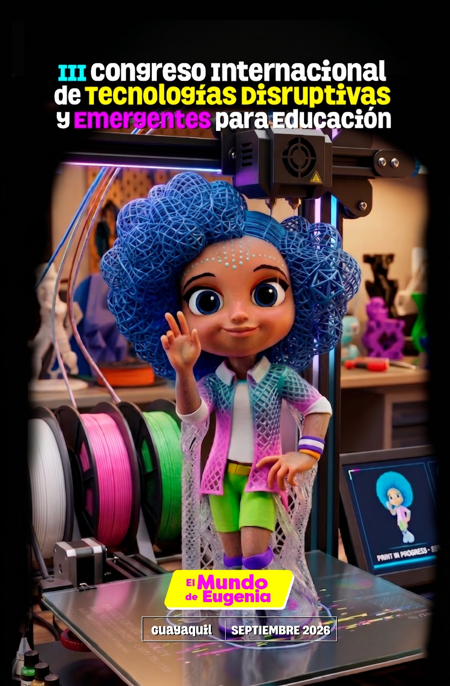

--
Días
Dos días para repensar la educación desde la inteligencia artificial y la robótica educativa. Conferencias magistrales, charlas TED y talleres prácticos liderados por expertos nacionales e internacionales.

El Congreso Internacional de Tecnologías Disruptivas y Emergentes para Educación es una iniciativa de la Dirección Nacional de Tecnologías para la Educación (DNTE) del Ministerio de Educación, Deporte y Cultura, dentro de la marca El Mundo de Eugenia.
En su tercera edición, el congreso reúne a autoridades, académicos y docentes de todo Ecuador durante dos jornadas intensivas para explorar cómo la inteligencia artificial y la robótica educativa están transformando el aula, a través de conferencias magistrales, charlas TED y talleres prácticos.
Cada jornada del congreso se construye alrededor de un eje tecnológico, con su propio bloque de conferencias, charlas TED y taller práctico.
Horario completo de ambas jornadas, desde el registro hasta el cierre de talleres.
El bloque de la tarde del primer día se divide en 10 grupos de 30 docentes, cada uno guiado por una institución aliada.
Tres charlas cortas por jornada, entre la conferencia magistral y el break.
Casos de aplicación de tecnología emergente llevados al aula por la Universidad de las Fuerzas Armadas ESPE.
La Universidad de las Américas comparte su experiencia en innovación educativa con IA.
Universidad Técnica Estatal de Quevedo — experiencias de robótica educativa en territorio.
El congreso se realiza en Guayaquil, con la Universidad Católica Santiago de Guayaquil como anfitriona del segundo día y sede del taller de robótica educativa.
Regístrate como docente o autoridad educativa y participa de dos días de conferencias, charlas TED y talleres prácticos, totalmente gratuitos.
Inscríbete al congreso →